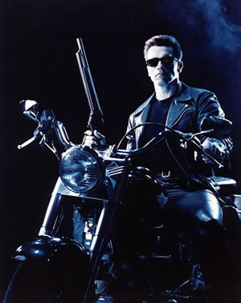
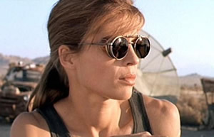

Tja, leider habe ich das Hobby erst viel zu spät als Selbstfahrer entdeckt. In der Jugend, so etwa mit 15, bin ich öfters von meinem Nachbarn Gerd auf der RD 250, RD 350 und später auf der Suzuki GT350 RAMAIR mitgenommen worden. Oft musste vor der Ausfahrt noch ein wenig gebastelt weren, um die Fuhre in Gang zu bekommen. Speziell die RD 250 hat oft gezickt und mit der hatte ich auch meinen ersten Bodenkontakt beim endlosen Anschieben. Mistkarre.....
Später bin ich dann, ab und zu, mit den getunten Mofa´s von den Klassenkameraden herumgefahren, aber dann war lange Ruhe und irgendwie auch kein Interesse mehr. Inzwischen hatte man jetzt ein Auto und war mobil!
Doch das Interesse am Motorrad sollte sich 1995 ändern!
Eines Abends schaute ich, wie gewöhnlich, beim "Griechen", Gabi und Kosta, rein und entdeckte an meinem späteren Musiker-Stammtisch eine Anzahl Bekannte.
Was macht Ihr denn alle hier? war meine Frage.
Wir hatten heute den ersten theoretischen Unterricht für den Motorradführerschein und trinken noch ebend ein Bier!
Hast Du nicht Lust auf Motorradfahren?
Wir wären dann 10 Leute und würden einen Rabatt bekommen! lautete die Antwort.
Na ja, zunächst war Klärungsbedarf, was das wohl kostet und wie lange das dauert und, und, und....
Nach wenigen Tagen stand für mich fest, es geht los!
ich schieße jetzt schon seit ich 12 bin Lg/Lp, doch seit ich damit angefangen habe hatt eich immer den Einen Traum
Ich wollte Wurfscheibenschießen und das evtl., falls das mir überhaupt möglich ist, sportlich tun.
Nun habe ich heute mal gegoogelt und etwas gefunden, eine Anlage zum Wurscheibenschießen ganz in meiner Nähe (relativ nah 30 km).
Auf der Seite laß ich das man als Gruppe oder Einzeln dorthin kommen kann um mal mit der Flinte ein paar Scheiben zu treffen (oder vorbeizuschießen)
Nun das Problem & meine Fragen:
Ich bin noch 17, kann ich mit vorheriger Absprache mit dem Verein und unter der Begleitung meiner Eltern dort mal in den Sport reinschnuppern? Oder ist das vom Gesetzgeber her verboten und ich muss mindestens 18 (oder älter) sein?
Meine Mutter z.B. steht voll hinter meiner Leidenschaft und würde mir meinen Traum zu meinem 18 Geburtstag erfüllen.
Also darf ich oder darf ich nicht? Und wenn ich darf muss ich noch warten oder kann ich schon bald mal anlegen?
Im Notfall muss der nächste Urlaub halt mal über den großen Teich nach Amerika verlegt werden da schießen ja schon die 6 Jährigen mit 9mm.
Karneval ohne Kostüm - So kann es gehen!
Jedes Jahr habe ich ein anderes Kostüm genäht bekommen!
Und jetzt...stehe ich da! Ohne Kostüm! Auch wenn meine Mutter immer bereit war es mir beizubringen, hat es nicht viel gebracht! Nähen ist einfach nicht mein Hobby. Und da sie es so gut konnte, habe ich ihre Werke sehr gern und dankend angenommen!
Nun muss ich selber ran. Die Idee ist da, der Stoff auch! Die Nähmaschine und Garn ist auch da! Jetzt heisst es: Das Experirment kann beginnen!
Speckstein bearbeiten, Kerzen ziehen, Naturcollagen erstellen - kreativ in den Ferien sein, das kannst du bei diesen Ferien am Hölzernen See in der Hobbybude. Bring deine Ideen mit und bastele, kreiere und entwerfe mit den anderen interessante und tolle Dinge, die ihr dann mit nach Hause nehmt, um sie zu verschenken oder als Erinnerung an euren Urlaub ins Regal zu stellen. Eine Fahrradtour, Kino, Disco, baden und viel Spaß gehören auch zum Programm und alles was du dir mit den anderen bei diesen Kreativferien einfallen lässt.